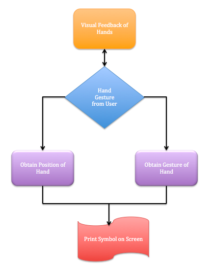
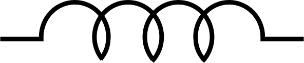

CIRCUITSLEAP
Objective
To use leap motion and draw a closed circuit on Unity Game Engine with only hand gestures
Introduction
As an electrical engineer in college, we spend a lot of time designing and drawing circuits on the computer. One then would understand the tedious process of locating different symbols in the computer and accomodating to a myriad of circuit design software. Hence, we would like to design a software that allows user to make a circuit at the tip of their fingers.
At each instant, as long as the user's hand is within the detection range of the Leap Motion, Leap Motion would detect the coordinates of the user's fingertips and center of hand and what gestures are the users doing. We exploited this feature of leap motion and allows users to put circuit elements at wherever they want on the screen. The user would need to turn on the Unity Game Engine software and start doing certain gestures at certain locations around the screen, and the desired circuit element would appear at that location of the screen.
Framework
The framework of the design is as follow:

Leap Motion can recognize four basic hand gestures, and four basic circuit elements associates with each gesture:
| Circle | Swipe | Key Tap | Screen Tap | |
|---|---|---|---|---|
| Motion |  |
 |
 |
 |
| Circuit Elements |  | |||
| Inductor | Voltage Source | Capacitor | Resistor |
Connect Unity with Leap Motion
One of our biggest challenges is to connect Unity with Leap Motion. Although Leap Motion has Unity documentation written in C#, it was not explicitly stated how the two things connect with one another.
The gist of the connection is that every time Unity updates the animation frame, Leap Motion should listen (i.e. provide a new set of information on the position and motion of hands) to the hands. The following code shows the how to combine the two devices together:
public class myscript: MonoBehaviour{
void Start(){
}
void Update(){
SampleListener listener = new SampleListener ();
Controller controller = new Controller ();
controller.AddListener (listener);
controller.RemoveListener (listener);
controller.Dispose ();
}
}
class SampleListener : Listener
{
private void SafeWriteLine (string line)
{
}
public override void OnConnect (Controller controller)
{
}
public override void OnFrame (Controller controller)
{
}
if (!frame.Hands.IsEmpty || !frame.Gestures ().IsEmpty) {
SafeWriteLine ("No hands");
}
}
Detect Hand Motion and Position
The Leap Motion SDK website provides a comprehensive guide for first timers to understand the theory behind detection. However, in this program, we only need to know two things:
- Hand Posiiton -- which is determined by the normal vector of the palm
- Hand Gesture -- which is a built-in library that can be enabled by the users
All detection would occur as each frame is updated, hence most of the code here would be placed in OnFrame function. The challenge is to continuously update the position and motion of the hand in each frame. However, since human motion are generally unpredictable, we found out that Leap motion could not detect hands that either quickly move in space or quickly change gestures . We also discovered that amongst the four gestures detectable by leap motion, the most significant ones are swipe and circle.
In any case, the sample program would utilize all four gestures, and programmers can customize it however they want.
First, we need to enable the four gestures in public override void OnConnect:
public override void OnConnect (Controller controller)
{
controller.EnableGesture (Gesture.GestureType.TYPE_CIRCLE);
controller.EnableGesture (Gesture.GestureType.TYPE_SWIPE);
controller.EnableGesture (Gesture.GestureType.TYPE_KEYTAP);
controller.EnableGesture (Gesture.GestureType.TYPE_SCREENTAP);
}
Second, we need to obtain the normal vector of the hands and scale it accordingly such the coordinates on the screen matches the coordinates of Leap Motion:
public override void OnFrame (Controller controller)
{
// Get the most recent frame and report some basic information
Frame frame = controller.Frame ();
foreach (Hand hand in frame.Hands) {
float i =0;
float j =0;
// Get the hand's normal vector and direction
Vector normal = hand.PalmNormal;
Vector direction = hand.Direction;
//scale x-coordinates of leap motion
i = (float)hand.PalmPosition.x ;
Clicktime.finali = -i*40/300 + 10;
//scale y-coordinates of leap motion
j = (float)hand.PalmPosition.y;
Clicktime.finalj = -40 + 40*j/150 + 10 ;
}
}
Third, within the same function but after the hand position detection function, we need to detect each gesture and assign a reference letter for each kind of gesture. The reference letters would be useful when we are trying to assign a circuit element to each gesture:
public override void OnFrame (Controller controller)
{
...
GestureList gestures = frame.Gestures ();
for (int i = 0; i < gestures.Count; i++) {
Gesture gesture = gestures [i];
switch (gesture.Type) {
case Gesture.GestureType.TYPE_CIRCLE:
Clicktime.gesture = 'i';
CircleGesture circle = new CircleGesture (gesture);
break;
case Gesture.GestureType.TYPE_SWIPE:
Clicktime.gesture = 'v';
SwipeGesture swipe = new SwipeGesture (gesture);
break;
case Gesture.GestureType.TYPE_KEYTAP:
Clicktime.gesture = 'c';
CircleGesture keytap = new KeyTapGesture (gesture);
break;
case Gesture.GestureType.TYPE_SCREENTAP:
Clicktime.gesture = 'r';
SwipeGesture screentap = new ScreenTapGesture (gesture);
break;
default:
SafeWriteLine (" Unknown gesture type.");
Clicktime.clicktime = 0;
break;
}
}
}
Place the element
From this point onwards, since we already got the information we need from the Leap Motion, we would write the rest of the code in the public class myScript: MonoBehavior. To place the circuit element that is associated with each hand gesture, we need to set the circuit element as a prefab and retrieve the circuit element from the prefab folder.
We would create a function that takes in position coordinates (of the palm, ideally) and at every screen update, the program would check the gesture of the user's hand and call that function specifically to spawn a circuit element on the location specified.
void Update(){
...
approximateposition (Clicktime.finali, Clicktime.finalj);
switch (Clicktime.gesture) {
case 'c':
//SpawnInductor (20,20, Clicktime.k);
SpawnInductor (Clicktime.finali, Clicktime.finalj, -100);
Debug.Log ("Spawning inductor");
break;
case 'k':
//SpawnCapacitor(20,-20,Clicktime.k);
SpawnCapacitor (Clicktime.finali, Clicktime.finalj, -100);
Debug.Log ("Spawning capacitor");
break;
case 's':
//SpawnResistor(-20,20,Clicktime.k);
SpawnResistor (Clicktime.finali, Clicktime.finalj, -100);
Debug.Log ("Spawning resistor");
break;
case 'w':
//SpawnPower (-20,-20,Clicktime.k);
SpawnPower (Clicktime.finali, Clicktime.finalj, -100);
Debug.Log ("Spawning power");
break;
}
void SpawnInductor(float i, float j, float k){
inductor_im = GameObject.Instantiate (Inductor_im,new Vector3(i,j,k),Quaternion.identity) as GameObject;
}
void SpawnCapacitor(float i, float j, float k){
capacitor_im = GameObject.Instantiate (Capacitor_im,new Vector3(i,j,k),Quaternion.identity) as GameObject;
}
void SpawnPower(float i, float j, float k){
power_im = GameObject.Instantiate (Power_im,new Vector3(i,j,k),Quaternion.identity) as GameObject;
}
void SpawnResistor(float i, float j, float k){
resistor_im = GameObject.Instantiate (Resistor_im,new Vector3(i,j,k),Quaternion.identity) as GameObject;
}
}
The function approximatelocation(Clicktime.finali, Clicktime.finalj) is used during prototype phase to test the code. The details of the code could be found in the github page.
Outcome
We sucessfully placed the four circuit elements onto the Unity Screen with different hand gestures.

Next Steps
For those interested in obtaining the code and updating it, the github page for circuitsleap could be found here.
Some suggestions for future improvement include:
- Connecting the ends of circuit elements together
- Developing a suitable coordinate system for placing different circuit elements onto the screen
- Developing a backend program such that the software can perform Nodal analysis on the system.